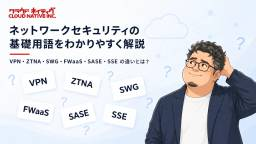
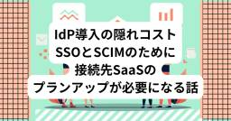

CloudNative BLOGs
https://blog.cloudnative.co.jp
株式会社クラウドネイティブの技術ブログ。ゼロトラスト、SaaS、AI、セキュリティなどの最新情報をお届けします。
フィード
クラウドネイティブに入社しました〜AI時代を生き残れるマーケターを目指して〜
CloudNative BLOGs
クラウドネイティブに入社したマーケターのGotoが、AI時代に感じたキャリアの不安、転職の決め手、入社後の驚きとこれからの目標を紹介します。
1日前
CCSPに2回落ちて3度目で合格した勉強法と受験までの流れ
CloudNative BLOGs
CCSPに2回落ちて3度目で合格した記録です。問題集の暗記をやめ、CSAのセキュリティガイダンスV5と公式教科書を軸に切り替えた勉強法、独学と公式研修の費用比較、2025年10月のCAT移行と再受験ルールをまとめました。
3日前

ヒューマンエラーでの情報漏えいはこうして起こる | 生成AIエージェントを使う日常の落とし穴
CloudNative BLOGs
生成AIエージェントを日常業務で使うセキュリティ責任者が、チャットツールのダウンロード先設定を変えたことで、公表前の資料をリポジトリに混入させた実体験を振り返ります。原因とOWASP LLM06の観点、再発防止策を紹介します。
3日前

代表・シンジがファインディ様主催のログ基盤イベントに登壇しました！【イベントレポ】
CloudNative BLOGs
2026年10月22日に開催されたファインディ様主催のイベント「増え続けるログ、どこに置き、どこまで残すか」で、弊社代表の齊藤がAIエージェントのログ設計をテーマに登壇しました。その登壇レポートです。
3日前
Entra Domain Services の信頼越しのアクセスが NTLM に落ちていたので、KFSO で Kerberos に戻した話
CloudNative BLOGs
Entra Domain Services とオンプレ AD の一方向フォレスト信頼で、ファイル共有へのアクセスが NTLM にフォールバック。クライアント側の Kerberos フォレスト検索順序を設定し、klist とイベント ID 4624 で Kerberos に戻ったことを確認する手順と、本番展開時の注意点を紹介します。
3日前

今さら聞けないネットワークと通信の略語｜ゼロトラスト・VPN・ZTNA・SWG・FWaaS・SASE・SSEを新人向けに整理【2026】
CloudNative BLOGs
ゼロトラスト・VPN・ZTNA・SWG・FWaaS・SASE・SSEの7語を、考え方・つなぎ方・通信の検査・まとめ方の役割で整理します。VPNとZTNA、SASEとSSEなど紛らわしい違いもNISTやGartnerの一次情報で確認できる、新人向けのリファレンス記事です。
3日前

IdP導入の隠れたコスト、SSOとSCIMのために接続先SaaSのプランアップが必要になる話
CloudNative BLOGs
IdP のライセンス費用は予算に入っていても、SSO や SCIM の接続先になる SaaS 側で上位プランが必要になる分は抜けがちです。Slack、Notion、GitHub、Zoom、Atlassian、kintone の2026年10月時点の条件を確認しながら、プランアップを見送ると一部だけ SSO 化された状態で IdP が使われなくなる流れと、接続先の棚卸しと予算化の進め方を整理します。
4日前
退職・異動の権限は、どこまで自動で減らせるか。いまの環境から始めるID管理
CloudNative BLOGs
IdPでアカウントを止めても、SaaS側の退職・異動対応が終わったとは限りません。IdPでの無効化がSaaSにどこまで届くかで3つのパターンに整理し、SaaSごとに確認する4点と、残る操作を担当・期限付きで台帳に残す設計を情シス向けに解説します。
4日前

「完了しました」は証拠ではない。AIの報告と実際の件数を突き合わせる習慣
CloudNative BLOGs
AIに請求書の登録を任せたら「完了しました」と返ってきたのに、一部は登録されていませんでした。AIの報告は、AIが自分の作業を説明した文で、できた証拠ではありません。報告と実物がずれる4つの型と、できあがったものの側を数える3つの確かめ方を、数え直す範囲の絞り方とあわせて紹介します。
4日前

Macの使い捨てメモ、下書きエディタ環境をAntinoteに移した話
CloudNative BLOGs
Slack やメールの下書きを本文の入力欄の外で書くために、macOS 向けのスクラッチパッド Antinote を使い始めました。⌥A での即時起動、貼り付け時の書式落とし、スクリーンショットのローカル OCR といった機能が、下書き用途にそのまま刺さります。下書き専用エディタのエディ太郎をフォークして Swift で書き直していた経緯も含めて紹介します。
5日前

【Netskope】Browseでアラートが出ないのは仕様。それでもBlock前に影響を知りたい時どうする？
CloudNative BLOGs
BrowseをAlertにしてもSkope ITのAlertsには起票されません。Advanced AnalyticsのTransaction EventsをRTP Nameで抽出し、ユニークドメイン数・対象ユーザー数でBlock化の影響範囲を事前に把握する手順と、Do Not Decryptなど抽出に出てこない通信の注意点をまとめました。
5日前

「SCS評価制度への備え方」を開催しました！【CNイベントレポ】
CloudNative BLOGs
2026年10月16日に開催した「SCS評価制度への備え方」のイベントレポートです。3社のセッションと懇親会の様子、SCS評価制度 取得支援サービス、次回イベント（12月11日予定）をご紹介します。
5日前

Entra Domain Services の一方向フォレスト信頼で、オンプレ側のサーバーにログオンするまで
CloudNative BLOGs
Microsoft Entra Domain Services とオンプレミス AD の間に一方向フォレスト信頼を張り、Entra DS のユーザーでオンプレ側のサーバーにログオンするまでに、つまずいた点と注意点をまとめます。信頼の向き、DNS、信頼パスワード、ログオン権の付与、SIDHistory を許可する際の注意点を扱います。
5日前
シャドーAIを「技術的に」阻止する方法 2
2
CloudNative BLOGs
AIの利用ルールだけでは足りず、シャドーAIを技術的に制御する必要がある組織に向けて、エンドポイント・ID・IaaSとアプリ・ネットワークの4レイヤーで考え方を整理します。Netskope・Zscaler・Cato・Aurascapeなど国内外40製品を16軸で比べたマルバツ表付きです。
6日前

PHPの脆弱性のニュースを聞いて「利用しているSaaSは大丈夫？」と聞かれた情シスに伝えたい経営層への報告の考え方
CloudNative BLOGs
話題になったPHP脆弱性をきっかけに今後脆弱性ニュースのたびに「利用しているSaaSは大丈夫？」と聞かれる情シス向けに、ベンダー情報の確認、問い合わせの優先順位、経営層への影響・対応状況の報告方法を整理します。
8日前
AI時代の開発言語の選び方：12の選定基準と主要言語の解説
CloudNative BLOGs
AIがコードを書く時代、言語選定では「AIが正しく書けるか」「AIの誤りを機械と人間が検証しやすいか」が重要になります。学習データ量や静的型付けなど12の選定基準と、Python・TypeScript・Go・Rustなど主要言語の評価、用途別のおすすめを解説します。
9日前
【動画紹介】AI時代の情報漏えい対策｜見直しておきたい「運用の穴」
CloudNative BLOGs
日々の運用に潜む情報漏えいのリスクと、攻撃者がAIを使う時代のセキュリティ対策をテーマにした、2本の動画を紹介します。
10日前
IDCFクラウドのランサムウェア被害に学ぶバックアップ設計
CloudNative BLOGs
2026年10月、IDCFクラウドがランサムウェア攻撃を受け495の企業・自治体に影響が出ました。同一基盤のバックアップが使えなかった例と別クラウドのバックアップで翌日に移行を終えた例から、依存先の棚卸しとバックアップの管理境界の設計を整理します。
10日前
営業からPMへの転職は、ジョブチェンジじゃなかったかもしれない（2）「準備の型化」で説明できると思っていた
CloudNative BLOGs
営業とPMの違いを探して、最初に立てた二つの仮説をたどります。準備で型にできるものが違うという一つ目の仮説と、経験から積み上がるものが違うという二つ目の仮説から、崩れるたびに気づきを得ながら営業とPMの違いを自分の言葉にしようとする連載の第2回です。
11日前
CISMに2回目で合格した勉強法と受験までの流れ
CloudNative BLOGs
CISMを1回目414点で落ち、2回目459点で合格した記録です。CISMの概要と認定要件、公式問題集・ISACA公式研修・Udemy模試の費用と使い分け、「順序・階層・役割」で解く考え方、申し込みから当日の流れ、2026年11月3日の試験改定までまとめました。
12日前
情報処理安全確保支援士 合格体験記｜独学で使った教材5つと、「午後試験から始める」勉強法
CloudNative BLOGs
情報処理安全確保支援士に独学で合格した体験記。教材5つ、午後（科目B）から始める勉強法、350時間の配分と得点を紹介。2026年度のCBT化と2027年度の新制度も解説します。
15日前
AIにPC-98のコードを書かせ、動いたことをAI自身に確かめさせる
CloudNative BLOGs
生成AIは16ビットx86アセンブラを書ける。解けていないのは、生成したコードが動いたかどうかをAI自身が確かめる部分だ。ブラウザ完結のPC-98開発環境WorkbenchNP2と、エミュレータWebNP2のMCPサーバーを使い、テキスト画面の読み出し・画面変化の待機・状態の保存と巻き戻し・行単位デバッグまでを試した記録。エージェントに任せられる範囲と、人の目が要る境界を整理する。
17日前
SaaSの設定管理台帳をNotion Workersで作る
CloudNative BLOGs
Notion WorkersでGoogle Workspaceの設定値を台帳へ同期し、変更と元に戻した際の履歴を確認しました。グループ総数の履歴を作業申請と結びつけた例と、費用・保守・使う人から記録先を選ぶ考え方を紹介します。
17日前
Jamf Nation User Conference 2026に行ってきた！(セッション編)
CloudNative BLOGs
Jamf Nation User Conference 2026に行ってきました。Keynoteセッション以外で興味深かったものについて取り上げています。
17日前
起票されなかったタスクに誰が気づくのか。AIの「正常完了」に隠れた取りこぼしを拾う8つの決めごと
CloudNative BLOGs
連載2本目。1本目では、AIに任せた処理が動かなくなった時に「無いこと」へどう気づくかを書きました。今回はその対になる話です。処理は動いていたのに、期日のある依頼が1件だけ拾われていませんでした。立たなかったタスクは誰の視界にも入らないため、期日が来るまで発覚しません。AI側で4つ、人側で4つ、判定と点検の決め方を整理しました。
18日前
フィッシング訓練は事前に告知すべき？
CloudNative BLOGs
フィッシング訓練は事前に告知すべきでしょうか。報告手順の教育と配信の予告を分け、教える・実践する・課題を直す流れで考えます。NCSCとNISTの資料を踏まえ、クリック率だけで評価しない方法や、報告を受ける側の対応まで含めた訓練の進め方を解説します。
18日前
Netskopeから「ステアリング構成の分離」の通知が来たけど、何をすれば良いの？
CloudNative BLOGs
NetskopeのDecoupled Proxy移行通知を受けた管理者向けに、Coupledとの違い、移行日確認や非標準ポート対応、事前準備と当日の確認手順を整理します。
22日前
Evolveumのドキュメントから学ぶ、ID管理・アクセス管理とIGAの要点
CloudNative BLOGs
ID管理とアクセス管理は何を担い、IGAはそこに何を加えるのか。Evolveumのドキュメントと公開インシデントを手がかりに、情シス・情報セキュリティが企業のIDと権限を継続的に管理するための考え方を整理します。
23日前
Notionカスタムエージェントはどの手順書を根拠にする？DBプロパティ設計で検証
CloudNative BLOGs
Notionに手順書を集めても、旧版が残っていればAIはそれも読みます。状態プロパティと次回確認日を持たせたDBと、2体のエージェントで、古い情報を回答の根拠にせずに済むのかを検証しました。
24日前
AIで自動化を作れる時代に、iPaaSに任せたいもの
CloudNative BLOGs
AIで業務自動化を作るハードルは下がりましたが、資格情報、権限、実行履歴、脆弱性対応、引き継ぎといった運用の仕事は残ります。MakeとAWSの両方で業務自動化を動かしている当社の経験をもとに、iPaaSに任せる範囲と自前で持つ範囲を判断する軸を整理します。
24日前
Microsoft Digital Defense Report 2026を読む｜ID管理の重要性と、事業影響で見るセキュリティ対策
CloudNative BLOGs
AIで攻撃の速度と規模が増す今も、ID・端末、特にIDの管理は防御の基本です。Microsoft Digital Defense Report 2026から、ID管理の重要性と、事業への影響でセキュリティ対策を評価することを考えます。
25日前
情報漏えいの起こし方
CloudNative BLOGs
情報漏えいが起きる「条件」を、架空の会社の会話と結果で16の短編として描きます。予算未申請、例外権限、放置データなど、現場の気付きに役立つ内容です。
25日前
ゼロトラスト採用でも侵入された｜デジタル庁GSS事案と残存VPNの点検
CloudNative BLOGs
デジタル庁は2026年9月11日、GSSへの不正アクセスで約24.6万件の個人情報が漏えいした可能性を公表しました。攻撃前に公表済みのVPN機器の脆弱性が修正前に悪用された本事案から、脆弱性の優先度判断と保守用アカウント統制の点検項目を情シス向けに解説します。
25日前
AVDのWindows 11 Multi-Session仮想マシンをAzure Backupでバックアップ・リストアする
CloudNative BLOGs
AVDのWindows 11 Multi-Session仮想マシンをAzure Backupでバックアップし、ファイル単位・仮想マシン単位でリストアする手順を、BitLocker・管理者実行・英語ロケール・TCPポート3260開放・ホストプール重複の5つの注意点とともに解説します。
1ヶ月前
【YouTube動画】SCS評価制度は自社にも関係する？現時点で分かっていることと準備の考え方
CloudNative BLOGs
SCS評価制度は自社にも関係するのか。現時点で公表されている制度の大枠と、企業が考えておきたい準備をYouTube動画とともに紹介します。取得支援サービスやオフラインイベントもご案内します。
1ヶ月前
変化の早いITで、変わらない情シスの判断軸―自社のITを考える4つの問い
CloudNative BLOGs
製品や技術が変わっても、情シスが確認すべき問いは大きく変わりません。「お風呂で情シスラジオ」の切り抜き動画を手がかりに、自社のITについて考える4つの問いを整理します。
1ヶ月前
Okta VerifyがFastPass・プッシュ・TOTPに分かれる。既存ユーザーへの影響と登録ポリシーの設定例
CloudNative BLOGs
Okta VerifyをFastPass / プッシュ / TOTP別に制御できる新設定の内容と、GA自動適用時の注意点を解説します。既存ユーザーへの影響や登録ポリシー設計例、事前チェック項目を整理します。
1ヶ月前
外部向けGoogleフォームでファイルアップロードを使わない方がよい理由
CloudNative BLOGs
外部向けGoogleフォームでファイルアップロード付きフォームが開けない事例をもとに、Drive共有設定や許可リスト登録の切り分け手順と、外部利用時の注意点を解説します。
1ヶ月前
MDE P2ライセンスなのに、Defender for Businessになっていた話
CloudNative BLOGs
MDE P2を契約していてもテナントがDefender for Businessになる事例を解説します。Defenderポータルでのモード確認・切替手順、必要ライセンスや反映待ち、切替後の注意点を整理します。
1ヶ月前
SharePoint Online から Box へ Box Shuttle で移行する
CloudNative BLOGs
Box Shuttle で SharePoint Online から Box へ 1.5 TB を移行した実録です。移行先 Box の容量上限がサポート依頼制であること、SharePoint 側のサイトコレクション管理者権限が最大の関門になること、転送は Box 側で完結して手元のマシンを拘束しないことを、実際の所要時間とエラー内容もあわせて整理します。
1ヶ月前
GAPS of GAPS — コーディングエージェントが警報だけを止める
CloudNative BLOGs
システム開発の失敗要因を Goal / Activity / Process / Skill の四つのズレに分ける GAPS と、ズレを埋める手が次のズレを生む入れ子構造 GAPS of GAPS。20年前の枠組みをコーディングエージェントを入れた開発に当てはめると、ズレは消えないまま症状だけが出なくなる。
1ヶ月前
興味深い話を、より伝わりやすく。編集担当が紹介する「e-IT Life with シンジ」
CloudNative BLOGs
情シスやセキュリティをテーマに語るYouTubeシリーズ「e-IT Life with シンジ」。そのまま聞いても十分に価値のある話を、編集でさらに伝わりやすく。「e-IT Life with シンジ」の魅力やテロップ・テンポ調整の工夫、毎週水曜日18時20分の更新情報を編集担当が紹介します。
1ヶ月前
ServerlessDays Tokyo 2026 にブース出展＆登壇しました！【イベントレポ】
CloudNative BLOGs
2026年9月19日開催の ServerlessDays Tokyo 2026 にブース出展しました。スタンプラリーでにぎわったブースの様子と、前田が登壇したセッション「バイブコーディングで作ったプロダクトをどう安全に動かすか」をレポートします。
1ヶ月前
ServerlessDays Tokyo 2026 で「Vibe Coding で作ったプロダクトをどう安全に動かすか」を話してきました
CloudNative BLOGs
2026年9月19日の ServerlessDays Tokyo 2026 で「Vibe Coding で作ったプロダクトをどう安全に動かすか」というセッションを発表しました。「意図した通りに動く」と「問題がない」は別物という前提に立ち、ガードレールをプロダクトの外側（マネージドサービスとデプロイ経路）に置くという考え方を紹介します。発表資料も Speaker Deck で公開しています。
1ヶ月前
【備忘録】Entra Application Proxy 経由が「遅い」と言われたら
CloudNative BLOGs
Microsoft Entra Application Proxy経由だけ遅いと言われた際の切り分け手順を解説します。HAR取得とAI分析で遅延が経路固定かサーバ起因かを見極め、測定設計や注意点も学べます。
1ヶ月前
『部下としてのAI 世界一流エンジニアの進化術』を読んで、AI との付き合い方を見直している
CloudNative BLOGs
米マイクロソフトのシニアソフトウェアエンジニア、牛尾剛さんの『部下としてのAI 世界一流エンジニアの進化術』を読んだ感想です。AI がコードを書く時代に価値が残る「インサイト」、「余分な情報を与えない」コンテキスト・マネジメント、Fail Fast の自動化、新しい「Be Lazy」、人間側の脳がボトルネックになる話まで、とくに刺さった箇所を紹介します。
1ヶ月前